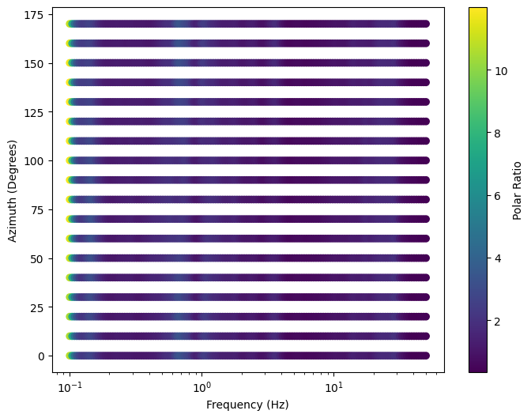
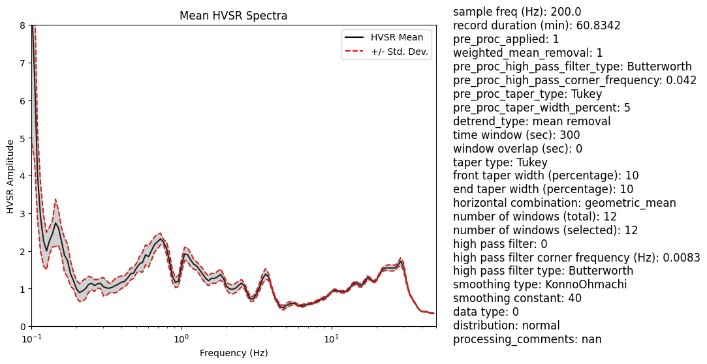
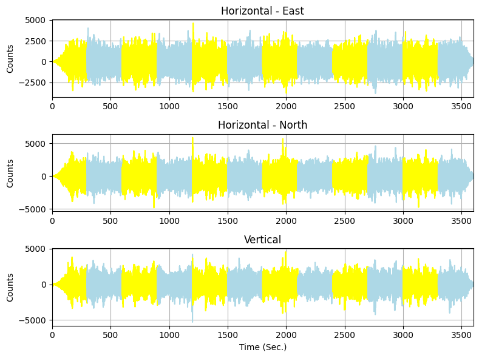
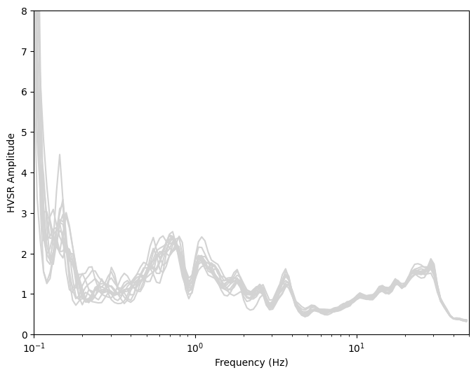
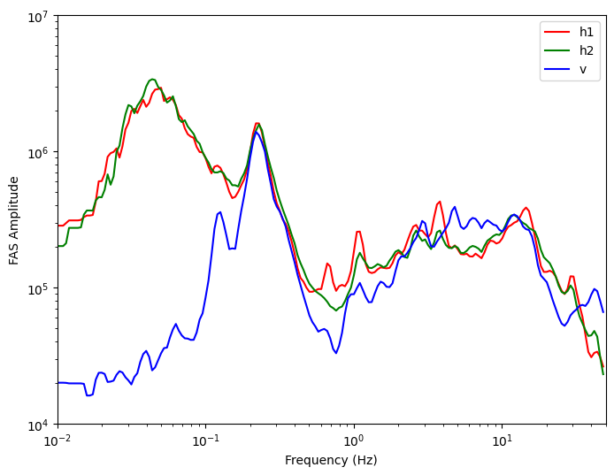

Example of hvsrprocpy Usage
Originally created: Apr. 28, 2024
Download the python library if not already done so#
# pip install hvsrprocpy
Load in the necessary python libraries#
#Import the hvsrprocpy package
import os
import hvsrprocpy as hv
import pymysql, json
import pandas as pd
from hvsrprocpy import HvsrMetaTools as hmt
If you need help, see below:#
#Print statement to see what are the functions and inputs within hvsrProc
# help(hv.hvsr)
Process the microtremor or earthquake data and get HVSR#
%%time
#Specify directory where .txt or .mseed files are stored
direc = r'C:\Users\Javier Ornelas\OneDrive\Documents\HVSRdata_Main\mHVSR Site Inv\VSPDB Data\CA Vertical Array Data\HVSRdata\2\2.250.2\Text_File_data\Raw_mseed_PEG_HH'
#Specify filenames of .mseed or .txt files
h1 = 'NX.USC6..HHE.D.2022.250'
h2 = 'NX.USC6..HHN.D.2022.250'
v = 'NX.USC6..HHZ.D.2022.250'
#specify where you want output to be stored
output_dir = r'C:\Users\Javier Ornelas\OneDrive\Documents\HVSRdata_Main\mHVSR Site Inv\HVSR VSPDB Data'
h1, h2, v, dt, time = hv.process_time_series(h1_fn=h1, h2_fn=h2, v_fn=v, directory=direc,
file_type=1, time_cut=120)
#Use the main function hv_proc which processes time series and hvsr
win_result, fd_select = \
hv.hvsr(h1=h1, h2 =h2, v=v, dt = dt, time_ts=time, output_dir=output_dir,
win_width=300, overlapping=0, plot_ts=True, plot_hvsr=True, output_polar_curves=True, norm_flag = False)
Pre-processing noise data is DONE!
Enter the index of the window to remove (Press q to quit): q
Time-domain selection is DONE!
Preparing for frequency-domain, please wait...
Enter the index of the curve to remove (press 'q' to quit): q
Frequency-domain selection is DONE!
Calculating and generating polar curve data, please wait......
Everything is DONE, check out the results in the output folder!
CPU times: total: 16.2 s
Wall time: 25.2 s
Plot the polar/azimuthal curves#
#Plot Polar Curve from output of hvsrProc
#specify directory where polar curve data is stored
POLAR = pd.read_csv(os.path.join(output_dir,'Test_hvsr_polar.csv'))
#specify where json file of frequencies is stored
standard_freqs = json.load(open(r'C:\Users\Javier Ornelas\OneDrive\Documents\HVSRdata_Main\Site Response Modelling Inv\GMDB OSAKA INV\mean_curves/HVSR_VSPDB_standard_frequencies.json'))
#specify degree increment
deg_increment = 10
#Specify azimuth
AZIMUTHS = list(range(0, 180, deg_increment))
#Process polar curve data
processed_pol_data = hv.process_polar_curve(polar_data = POLAR, azimuths = AZIMUTHS, standard_freqs = standard_freqs)
#Plot the polar curve
fig = hv.plot_polar_ratio(processed_pol_data)
# fig.savefig(r'C:\Users\Javier Ornelas\OneDrive\Documents\HVSRdata_Main\mHVSR Site Inv\HVSR VSPDB Data/test.png', dpi =500)

Plot the mean curves with the associated metadata#
#Specify directory where mean hvsr curve is stored
Mean_df = os.path.join(output_dir,'Test_hvsr_mean.csv')
#Specify directory where metadata is stored
metadata_csv_filepath = os.path.join(direc,'Test_metadata.csv')
#Plot the mean curve
fig = hv.plot_mean_hvsr(csv_file_path=Mean_df, metadata_csv_path=metadata_csv_filepath, xlim_m = 65, ylim_m = 4,
xlim=(0.1, 50), ylim=(0,8), robust_est=False, metadata_flag=True)

Plot the windowed time series data#
#Plot selected and unselected time series
#Specify directory where the time series is stored
ts_df = os.path.join(output_dir,'Test_ts_sel.csv')
#Plot the time series
fig = hv.plot_selected_time_series(csv_file_path = ts_df)
# fig.savefig(r'C:\Users\Javier Ornelas\OneDrive\Documents\HVSRdata_Main\mHVSR Site Inv\HVSR VSPDB Data/test.png', dpi =500)

Plot the selected HVSR curves used to develop mean curve#
#Plot selected time series
#Specify where the directory for the selected hvsr curves are located
sel_curve_dir = os.path.join(output_dir,'Test_hvsr_sel.csv')
#Plot the selected hvsr curves
fig = hv.plot_selected_hvsr(sel_curve_dir,xlim=(0.1, 50), ylim=(0, 8))
# fig.savefig(r'C:\Users\Javier Ornelas\OneDrive\Documents\HVSRdata_Main\mHVSR Site Inv\HVSR VSPDB Data/test.png', dpi =500)

Plot the mean FAS#
csv_path = os.path.join(output_dir,'Test_FAS_mean.csv')
fig = hv.plot_fas(csv_path, xlim=(0.01, 50), ylim=(10e3, 10e6))
# fig.savefig(r'C:\Users\Javier Ornelas\OneDrive\Documents\HVSRdata_Main\mHVSR Site Inv\HVSR VSPDB Data/test.png', dpi =500)

Get a csv file containing all the metadata for all stations#
#Example of using tools to process metadata for station xml files
#Specify the static metadata
field_crew = None
user = 'francisco javier ornelas'
weather = None
ground_type = None
sensor_ground_coupling = None
monochromatic = None
building = None
transients = None
data_type = 0
sensor_corner_frequency = 0.0083
gain = 1
comments = None
#Specify the directory where the stations are stored
directory = r'C:\Users\Javier Ornelas\OneDrive\Documents\HVSRdata_Main\mHVSR Site Inv\10'
#Run the tool
df = hmt.process_hvsr_metadata(field_crew, user, weather, ground_type, sensor_ground_coupling,
monochromatic, building, transients, data_type,
sensor_corner_frequency, gain, comments, directory)
#Save the dataframe (df) if needed
# df.to_csv(os.path.join(directory,'gmdb_query_metadata.csv'),header =True, index=False)
#Visualize the df
df
| name | longitude | latitude | elevation | start_date | end_date | start_time | end_time | field_crew | seismic_recorder | ... | building | transients | azimuth | user | comments | data_type | mass_position_w | mass_position_v | mass_position_u | mag_dec | |
|---|---|---|---|---|---|---|---|---|---|---|---|---|---|---|---|---|---|---|---|---|---|
| 0 | 10.0.0 | -118.178297 | 34.037050 | 83.7 | 2024-05-30 | None | 18:43:35.00000 | None | Pegasus Portable Digital Recorder PGS-140 | ... | None | None | 0 | francisco javier ornelas | None | 0 | None | None | None | None | |
| 1 | 10.250.1 | -118.175745 | 34.036540 | 120.7 | 2024-05-30 | 2024-05-30 | 17:01:35.00000 | 18:13:26.00000 | None | Pegasus Portable Digital Recorder PGS-140 | ... | None | None | 0 | francisco javier ornelas | None | 0 | None | None | None | None |
| 2 | 10.250.2 | -118.176393 | 34.038562 | 94.0 | 2024-05-30 | None | 20:04:07.00000 | None | Pegasus Portable Digital Recorder PGS-140 | ... | None | None | 0 | francisco javier ornelas | None | 0 | None | None | None | None | |
| 3 | 10.250.3 | -118.178783 | 34.034881 | 78.8 | 2024-05-30 | 2024-05-30 | 17:26:54.00000 | 18:42:16.00000 | None | Pegasus Portable Digital Recorder PGS-140 | ... | None | None | 0 | francisco javier ornelas | None | 0 | None | None | None | None |
| 4 | 10.250.4 | -118.180522 | 34.036645 | 104.5 | 2024-05-30 | 2024-05-30 | 17:22:35.00000 | 18:44:36.00000 | None | Pegasus Portable Digital Recorder PGS-140 | ... | None | None | 0 | francisco javier ornelas | None | 0 | None | None | None | None |
| 5 | 10.50.1 | -118.177850 | 34.037202 | 86.4 | 2024-05-30 | None | 18:49:51.00000 | None | Pegasus Portable Digital Recorder PGS-140 | ... | None | None | 0 | francisco javier ornelas | None | 0 | None | None | None | None | |
| 6 | 10.50.2 | -118.177863 | 34.036742 | 89.6 | 2024-05-30 | 2024-05-30 | 18:14:44.00000 | 19:27:07.00000 | None | Pegasus Portable Digital Recorder PGS-140 | ... | None | None | 0 | francisco javier ornelas | None | 0 | None | None | None | None |
| 7 | 10.50.4 | -118.178158 | 34.037463 | 92.2 | 2024-05-30 | None | 19:28:27.00000 | None | Pegasus Portable Digital Recorder PGS-140 | ... | None | None | 0 | francisco javier ornelas | None | 0 | None | None | None | None | |
| 8 | 10.500.1 | -118.177868 | 34.041472 | 94.8 | 2024-05-30 | 2024-05-30 | 18:45:54.00000 | 20:02:42.00000 | None | Pegasus Portable Digital Recorder PGS-140 | ... | None | None | 0 | francisco javier ornelas | None | 0 | None | None | None | None |
| 9 | 10.500.2 | -118.183667 | 34.036168 | 103.1 | 2024-05-30 | 2024-05-30 | 16:06:20.00000 | 17:21:32.00000 | None | Pegasus Portable Digital Recorder PGS-140 | ... | None | None | 0 | francisco javier ornelas | None | 0 | None | None | None | None |
| 10 | 10.500.3 | -118.180107 | 34.032753 | 75.6 | 2024-05-30 | 2024-05-30 | 16:01:52.00000 | 17:25:25.00000 | None | Pegasus Portable Digital Recorder PGS-140 | ... | None | None | 0 | francisco javier ornelas | None | 0 | None | None | None | None |
| 11 | 10.500.4 | -118.172808 | 34.037084 | 100.2 | 2024-05-29 | 2024-05-30 | 06:57:12.00000 | 17:00:33.00000 | None | Pegasus Portable Digital Recorder PGS-140 | ... | None | None | 0 | francisco javier ornelas | None | 0 | None | None | None | None |
12 rows × 31 columns
Get a csv file containing all the processing metadata for all stations#
#Example of using a tool to combine all metadata files
#Specify the folder path where the stations are stored
folder_path = r'C:\Users\Javier Ornelas\OneDrive\Documents\HVSRdata_Main\mHVSR Site Inv\Imperial Valley Inv'
#Specify a unique set of folders thats contained in all station folders
add_sim_path = 'Text_File_data/Raw_mseed_PEG_HH'
#Run the metadata tool
combined_metadata = hmt.combine_metadata(folder_path,add_sim_path)
#Visualize the dataframe (combined_metadata)
combined_metadata
# combined_metadata.to_csv(os.path.join(folder_path,'Imperial_Valley_processing_metadata.csv'),header =True, index=False)
| name | sample freq (Hz) | record duration (min) | pre_proc_applied | weighted_mean_removal | pre_proc_high_pass_filter_type | pre_proc_high_pass_corner_frequency | pre_proc_taper_type | pre_proc_taper_width_percent | detrend_type | ... | number of windows (total) | number of windows (selected) | high pass filter | high pass filter corner frequency (Hz) | high pass filter type | smoothing type | smoothing constant | data type | distribution | processing_comments | |
|---|---|---|---|---|---|---|---|---|---|---|---|---|---|---|---|---|---|---|---|---|---|
| 0 | 5052.0.0 | 200.0 | 50.0338 | 1 | 1 | Butterworth | 0.042 | Tukey | 10 | mean removal | ... | 10 | 10 | 1 | 0.0083 | Butterworth | KonnoOhmachi | 40 | 0 | normal | NaN |
| 1 | 5056.0.0 | 200.0 | 50.0390 | 1 | 1 | Butterworth | 0.042 | Tukey | 10 | mean removal | ... | 10 | 10 | 1 | 0.0083 | Butterworth | KonnoOhmachi | 40 | 0 | normal | NaN |
| 2 | 5058.0.0 | 200.0 | 50.0103 | 1 | 1 | Butterworth | 0.042 | Tukey | 10 | mean removal | ... | 10 | 10 | 1 | 0.0083 | Butterworth | KonnoOhmachi | 40 | 0 | normal | NaN |
| 3 | 5058.0.0b | 200.0 | 50.2718 | 1 | 1 | Butterworth | 0.042 | Tukey | 10 | mean removal | ... | 10 | 10 | 1 | 0.0083 | Butterworth | KonnoOhmachi | 40 | 0 | normal | NaN |
| 4 | 5060.0.0 | 200.0 | 30.1022 | 1 | 1 | Butterworth | 0.042 | Tukey | 10 | mean removal | ... | 12 | 8 | 1 | 0.0083 | Butterworth | KonnoOhmachi | 40 | 0 | normal | NaN |
| 5 | 5165.0.0 | 200.0 | 50.3387 | 1 | 1 | Butterworth | 0.042 | Tukey | 10 | mean removal | ... | 10 | 10 | 1 | 0.0083 | Butterworth | KonnoOhmachi | 40 | 0 | normal | NaN |
| 6 | 5165.50.1 | 200.0 | 50.0160 | 1 | 1 | Butterworth | 0.042 | Tukey | 10 | mean removal | ... | 10 | 10 | 1 | 0.0083 | Butterworth | KonnoOhmachi | 40 | 0 | normal | NaN |
| 7 | 5210.0.0 | 200.0 | 90.0783 | 1 | 1 | Butterworth | 0.042 | Tukey | 10 | mean removal | ... | 18 | 18 | 1 | 0.0083 | Butterworth | KonnoOhmachi | 40 | 0 | normal | NaN |
| 8 | 5273.0.0 | 200.0 | 51.2670 | 1 | 1 | Butterworth | 0.042 | Tukey | 10 | mean removal | ... | 10 | 10 | 1 | 0.0083 | Butterworth | KonnoOhmachi | 40 | 0 | normal | NaN |
| 9 | 5273.0.0b | 200.0 | 47.4230 | 1 | 1 | Butterworth | 0.042 | Tukey | 10 | mean removal | ... | 9 | 9 | 1 | 0.0083 | Butterworth | KonnoOhmachi | 40 | 0 | normal | NaN |
| 10 | 5490.0.0 | 200.0 | 50.0948 | 1 | 1 | Butterworth | 0.042 | Tukey | 10 | mean removal | ... | 10 | 10 | 1 | 0.0083 | Butterworth | KonnoOhmachi | 40 | 0 | normal | NaN |
| 11 | 931.0.0 | 200.0 | 55.3843 | 1 | 1 | Butterworth | 0.042 | Tukey | 10 | mean removal | ... | 11 | 11 | 1 | 0.0083 | Butterworth | KonnoOhmachi | 40 | 0 | normal | NaN |
| 12 | 931.50.1 | 200.0 | 50.7120 | 1 | 1 | Butterworth | 0.042 | Tukey | 10 | mean removal | ... | 10 | 10 | 1 | 0.0083 | Butterworth | KonnoOhmachi | 40 | 0 | normal | NaN |
| 13 | 952.0.0 | 200.0 | 50.1520 | 1 | 1 | Butterworth | 0.042 | Tukey | 10 | mean removal | ... | 10 | 10 | 1 | 0.0083 | Butterworth | KonnoOhmachi | 40 | 0 | normal | NaN |
| 14 | 952.100.1 | 200.0 | 49.8255 | 1 | 1 | Butterworth | 0.042 | Tukey | 10 | mean removal | ... | 9 | 9 | 1 | 0.0083 | Butterworth | KonnoOhmachi | 40 | 0 | normal | NaN |
| 15 | 952.50.1 | 200.0 | 52.2328 | 1 | 1 | Butterworth | 0.042 | Tukey | 10 | mean removal | ... | 10 | 10 | 1 | 0.0083 | Butterworth | KonnoOhmachi | 40 | 0 | normal | NaN |
| 16 | 952.50.2 | 200.0 | 52.7042 | 1 | 1 | Butterworth | 0.042 | Tukey | 10 | mean removal | ... | 10 | 10 | 1 | 0.0083 | Butterworth | KonnoOhmachi | 40 | 0 | normal | NaN |
| 17 | 955.0.0 | 200.0 | 51.0492 | 1 | 1 | Butterworth | 0.042 | Tukey | 10 | mean removal | ... | 10 | 10 | 1 | 0.0083 | Butterworth | KonnoOhmachi | 40 | 0 | normal | NaN |
| 18 | 955.50.1 | 200.0 | 49.8518 | 1 | 1 | Butterworth | 0.042 | Tukey | 10 | mean removal | ... | 9 | 9 | 1 | 0.0083 | Butterworth | KonnoOhmachi | 40 | 0 | normal | NaN |
| 19 | CAL.0.0 | 200.0 | 30.1162 | 1 | 1 | Butterworth | 0.042 | Tukey | 10 | mean removal | ... | 6 | 6 | 1 | 0.0083 | Butterworth | KonnoOhmachi | 40 | 0 | normal | NaN |
| 20 | ECC.0.0 | 200.0 | 49.9772 | 1 | 1 | Butterworth | 0.042 | Tukey | 10 | mean removal | ... | 9 | 9 | 1 | 0.0083 | Butterworth | KonnoOhmachi | 40 | 0 | normal | NaN |
| 21 | ECC.50.1 | 200.0 | 50.1783 | 1 | 1 | Butterworth | 0.042 | Tukey | 10 | mean removal | ... | 10 | 10 | 1 | 0.0083 | Butterworth | KonnoOhmachi | 40 | 0 | normal | NaN |
| 22 | OCT.0.0 | 200.0 | 73.0437 | 1 | 1 | Butterworth | 0.042 | Tukey | 10 | mean removal | ... | 14 | 14 | 1 | 0.0083 | Butterworth | KonnoOhmachi | 40 | 0 | normal | NaN |
| 23 | OCT.100.1 | 200.0 | 51.6760 | 1 | 1 | Butterworth | 0.042 | Tukey | 10 | mean removal | ... | 10 | 10 | 1 | 0.0083 | Butterworth | KonnoOhmachi | 40 | 0 | normal | NaN |
| 24 | OCT.50.1 | 200.0 | 61.7300 | 1 | 1 | Butterworth | 0.042 | Tukey | 10 | mean removal | ... | 12 | 12 | 1 | 0.0083 | Butterworth | KonnoOhmachi | 40 | 0 | normal | NaN |
| 25 | OCT.50.2 | 200.0 | 50.0108 | 1 | 1 | Butterworth | 0.042 | Tukey | 10 | mean removal | ... | 10 | 10 | 1 | 0.0083 | Butterworth | KonnoOhmachi | 40 | 0 | normal | NaN |
| 26 | P494.0.0 | 200.0 | 50.0878 | 1 | 1 | Butterworth | 0.042 | Tukey | 10 | mean removal | ... | 10 | 10 | 1 | 0.0083 | Butterworth | KonnoOhmachi | 40 | 0 | normal | NaN |
| 27 | Q0027.0.0 | 200.0 | 54.4502 | 1 | 1 | Butterworth | 0.042 | Tukey | 10 | mean removal | ... | 10 | 10 | 1 | 0.0083 | Butterworth | KonnoOhmachi | 40 | 0 | normal | NaN |
| 28 | Q0027.0.0b | 200.0 | 43.2092 | 1 | 1 | Butterworth | 0.042 | Tukey | 10 | mean removal | ... | 8 | 8 | 1 | 0.0083 | Butterworth | KonnoOhmachi | 40 | 0 | normal | NaN |
| 29 | RCF.100.1 | 200.0 | 50.2048 | 1 | 1 | Butterworth | 0.042 | Tukey | 10 | mean removal | ... | 10 | 10 | 1 | 0.0083 | Butterworth | KonnoOhmachi | 40 | 0 | normal | NaN |
| 30 | WLA.0.0a | 200.0 | 87.5677 | 1 | 1 | Butterworth | 0.042 | Tukey | 10 | mean removal | ... | 17 | 17 | 1 | 0.0083 | Butterworth | KonnoOhmachi | 40 | 0 | normal | NaN |
| 31 | WLA.0.0b | 200.0 | 89.6185 | 1 | 1 | Butterworth | 0.042 | Tukey | 10 | mean removal | ... | 17 | 17 | 1 | 0.0083 | Butterworth | KonnoOhmachi | 40 | 0 | normal | NaN |
| 32 | WLA.0.0c | 200.0 | 89.9220 | 1 | 1 | Butterworth | 0.042 | Tukey | 10 | mean removal | ... | 17 | 17 | 1 | 0.0083 | Butterworth | KonnoOhmachi | 40 | 0 | normal | NaN |
33 rows × 26 columns
Get a csv file containing all the mean curve data for all stations#
folder_path = r'C:\Users\Javier Ornelas\OneDrive\Documents\HVSRdata_Main\mHVSR Site Inv\Imperial Valley Inv'
add_sim_path = 'Text_File_data/Raw_mseed_PEG_HH'
df = hmt.create_mean_curves_csv(folder_path,'ImperialValleyMeanCurves.csv',add_sim_path, output_flag = False)
df
| freq_Hz | HVSR_mean_5052.0.0 | HVSR_sd_5052.0.0 | HVSR_mean_5056.0.0 | HVSR_sd_5056.0.0 | HVSR_mean_5058.0.0 | HVSR_sd_5058.0.0 | HVSR_mean_5058.0.0b | HVSR_sd_5058.0.0b | HVSR_mean_5060.0.0 | ... | HVSR_mean_Q0027.0.0b | HVSR_sd_Q0027.0.0b | HVSR_mean_RCF.100.1 | HVSR_sd_RCF.100.1 | HVSR_mean_WLA.0.0a | HVSR_sd_WLA.0.0a | HVSR_mean_WLA.0.0b | HVSR_sd_WLA.0.0b | HVSR_mean_WLA.0.0c | HVSR_sd_WLA.0.0c | |
|---|---|---|---|---|---|---|---|---|---|---|---|---|---|---|---|---|---|---|---|---|---|
| 0 | 0.01000 | 1.78718 | 3.71264 | 15.30930 | 16.88331 | 12.06717 | 15.44864 | 7.18448 | 12.22697 | 0.00000 | ... | 4.91671 | 3.51517 | 5.02836 | 4.38487 | 20.19586 | 34.08815 | 11.05955 | 150.36301 | 15.28698 | 95.58632 |
| 1 | 0.01047 | 1.78718 | 3.71264 | 15.30930 | 16.88331 | 12.06717 | 15.44864 | 7.18448 | 12.22697 | 0.00000 | ... | 4.91671 | 3.51517 | 5.02836 | 4.38487 | 20.19586 | 34.08815 | 11.05955 | 150.36301 | 15.28698 | 95.58632 |
| 2 | 0.01097 | 1.78718 | 3.71264 | 15.30930 | 16.88331 | 12.06717 | 15.44864 | 7.18448 | 12.22697 | 0.00000 | ... | 4.91671 | 3.51517 | 5.02836 | 4.38487 | 20.19586 | 34.08815 | 11.05955 | 150.36301 | 15.28698 | 95.58632 |
| 3 | 0.01148 | 1.99747 | 3.35164 | 14.56568 | 17.66388 | 11.88757 | 13.89973 | 7.83855 | 13.78412 | 13.89124 | ... | 5.35906 | 3.86390 | 5.72213 | 3.85131 | 20.54431 | 31.77428 | 11.22531 | 63.39658 | 15.11753 | 90.43514 |
| 4 | 0.01202 | 2.93277 | 2.83319 | 12.61560 | 25.55490 | 11.34330 | 12.04790 | 12.41303 | 18.56289 | 13.89124 | ... | 8.81858 | 5.69171 | 5.66382 | 4.23447 | 26.32066 | 27.83589 | 14.98229 | 65.21387 | 14.81287 | 80.01447 |
| ... | ... | ... | ... | ... | ... | ... | ... | ... | ... | ... | ... | ... | ... | ... | ... | ... | ... | ... | ... | ... | ... |
| 180 | 39.97614 | 0.83947 | 0.01852 | 1.08742 | 0.08018 | 0.37661 | 0.02797 | 1.10219 | 0.35584 | 0.52637 | ... | 0.91786 | 0.04907 | 0.60675 | 0.27250 | 0.72415 | 0.12313 | 0.49797 | 0.13931 | 0.73909 | 0.10984 |
| 181 | 41.86113 | 0.84643 | 0.01955 | 1.23767 | 0.13068 | 0.34991 | 0.01799 | 1.11119 | 0.30836 | 0.55747 | ... | 0.96904 | 0.03953 | 0.55881 | 0.23798 | 0.67910 | 0.10904 | 0.50499 | 0.14018 | 0.70312 | 0.11254 |
| 182 | 43.83499 | 0.86223 | 0.02680 | 1.45798 | 0.22939 | 0.34090 | 0.01513 | 1.00740 | 0.25084 | 0.58292 | ... | 1.03550 | 0.06346 | 0.61142 | 0.20997 | 0.64161 | 0.11975 | 0.53929 | 0.13765 | 0.68681 | 0.12523 |
| 183 | 45.90193 | 0.94220 | 0.03720 | 1.66405 | 0.35241 | 0.37005 | 0.01406 | 0.86906 | 0.23125 | 0.64275 | ... | 1.07982 | 0.06656 | 0.74595 | 0.20477 | 0.65107 | 0.12980 | 0.55697 | 0.13954 | 0.71213 | 0.13105 |
| 184 | 48.06633 | 0.95798 | 0.04811 | 1.59750 | 0.45547 | 0.42226 | 0.01327 | 0.80324 | 0.23990 | 0.66749 | ... | 1.03015 | 0.07743 | 0.85939 | 0.23143 | 0.63716 | 0.11909 | 0.58007 | 0.13794 | 0.69372 | 0.11568 |
185 rows × 67 columns